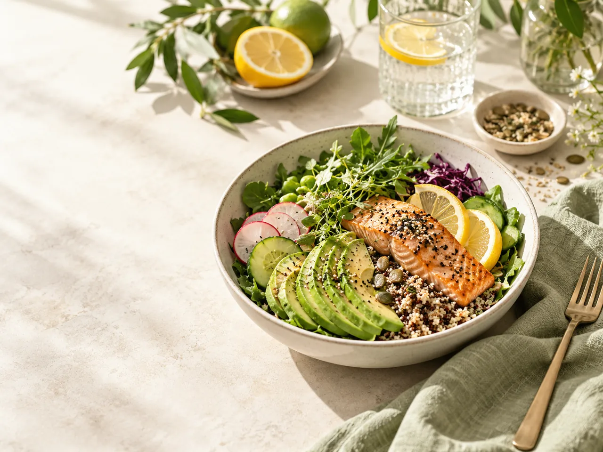
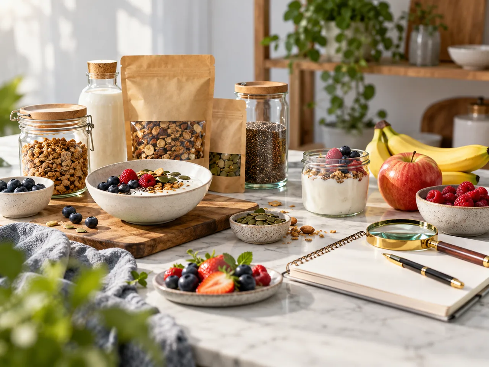
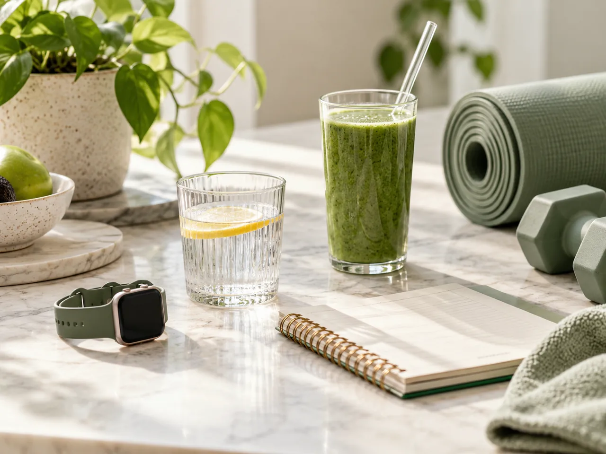

—
Score motivation
Sur 100 points
NUTRIX · VOTRE COMPAGNON NUTRITION
Suivez vos calories, comprenez vos macros et découvrez les aliments adaptés à vos objectifs. Vos données nutritionnelles, au même endroit.
VUE RAPIDE · CALORIES & MACROS
Vos résultats NUTRIX, actualisés à partir de votre journal et de vos objectifs.
Sur 100 points
Objectif : — kcal
Objectif : — g
Programmes nutrition
Planification des repas et suivi personnalisés pour atteindre vos résultats.



DÉCOUVERTE · NUTRIX
Explore des produits alimentaires et leurs informations nutritionnelles issues d’Open Food Facts.
Une sélection quotidienne enrichie : ingrédients et informations nutritionnelles de source Open Food Facts.
Chargement des données…
Mangez mieux, vivez pleinement.
Données personnelles stockées localement sur cet appareil · Analyses et scores à visée informative, non médicale.
Importe une photo d’un emballage pour obtenir une proposition d’identification. Vérifie toujours les valeurs nutritionnelles avec l’étiquette du produit ou la fiche Open Food Facts.
Confirme les valeurs sur l’étiquette avant de les utiliser. Laisse vide toute donnée illisible.
La photo est envoyée au module d’analyse uniquement quand tu cliques sur « Analyser la photo ». Elle n’est pas enregistrée par Nutrix.
Retrouve un produit, consulte ses informations disponibles et garde tes découvertes au même endroit.
Scanner un produit avec la caméra ou saisir son code.
Consulter les informations de la base Open Food Facts.
Comprendre les étiquettes et poser des questions générales.
Comprendre les indicateurs utilisés dans l’analyse des produits. Sources officielles et limites de chaque méthode.
Système d’étiquetage nutritionnel synthétique classé de A à E. Il ne mesure pas à lui seul la qualité globale d’une alimentation.
Santé publique France ↗Classification des aliments selon leur degré de transformation (groupes 1 à 4). Ne doit pas être confondue avec Nutri-Score.
Open Food Facts — NOVA ↗Le nombre d’additifs n’est pas une mesure du danger. La sécurité dépend des substances, doses et évaluations disponibles.
EFSA — Food additives ↗Les données des étiquettes viennent de contributeurs Open Food Facts. Le score Nutrix /100 est indicatif et non validé cliniquement.
Open Food Facts ↗Chaque outil indique ses sources et ses limites. Tes préférences restent dans ce navigateur.
Scannez. Comprenez. Choisissez.
Données communautaires © Open Food Facts · ODbL. Le score /100 est une estimation Nutrix, pas un score officiel.
Centrez le code-barres dans le cadre
Assistant nutritionnel, analyse produit et synthèse de tes données enregistrées.
Une photo suffit. L’IA fait le reste.
Estimations générées par IA, à titre indicatif. Pas un avis médical.
Un compagnon pour analyser, comparer et mieux comprendre les produits alimentaires.
Code-barres, recherche et analyse photo.
Nutri-Score officiel lorsqu'il est disponible, NOVA et indicateurs nutritionnels.
Observer les différences nutritionnelles entre produits.
Repas et apports nutritionnels enregistrés sur cet appareil.
Le score Nutrix /100 est indicatif, non officiel et ne constitue pas un diagnostic médical. Les données disponibles peuvent être incomplètes.
Où souhaitez-vous aller ?